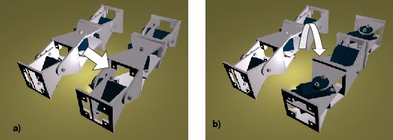
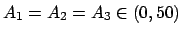
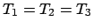
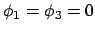
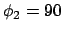

Next: 4 Lateral Rolling Up: 4 Configuration 2: Pitch-Yaw-Pitch Previous: 2 2D sinusoidal motion


Next: 4 Lateral
Rolling Up: 4
Configuration 2: Pitch-Yaw-Pitch Previous: 2
2D sinusoidal motion
|
 |
Figure: a) Lateral shift gait in PYP configuration. b) Lateral rolling gait in PYP configuration
PYP configuration can move using a lateral shift gait. It moves
parallel to itself, as shown in Figure .
Three sinusoidal waves are applied to all the modules with the
following restrictions:
.
Three sinusoidal waves are applied to all the modules with the
following restrictions:

,
,
,
. The amplitude of the waves are the same, with a value greater than 0 and smaller than 50.